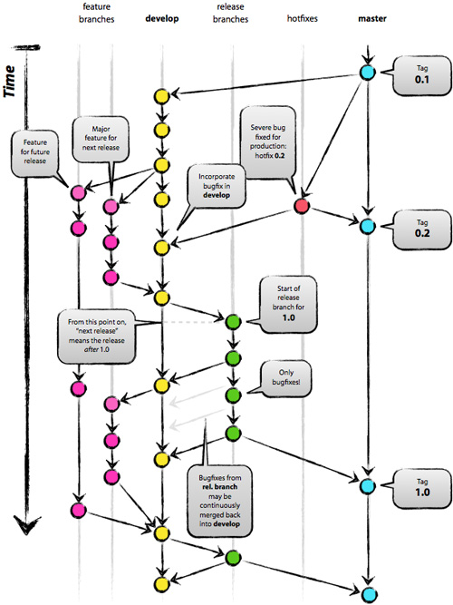

Branching Models
Within the following paragraphs will discuss some of the popular branching models which are around these days. After reading this you should be able to decide which one fits your project the most.
Git-Flow
This workflow has been published by Vincent Driesen as a successful branching model for git and covers most of the standard needs for a ‘classical’ development project.
How it works
Git-Flow has the following branching model:

There are 2 primary branches:
- master is the main branch where everything is stable. Each commit is a stable (fully tested) version of the project, (i.e. a release) which could be deployed to production and tagged accordingly.
- develop is the main branch where development is done. It will contain prepared changes for the next release in master.
And secondary branches which are flexible over time:
- feature starts from develop and merge into develop. When you are working on a specific feature, you create a feature\xxx branch and once it’s done, you merge it back into develop to add the stable feature to the scope for the next release. The essence of a feature branch is that it exists as long as the feature is in development, but will eventually be merged back into develop or discarded.
- release starts from develop and merge into master and/or develop. When develop is reflecting the desired state of the feature release, (all features for the release haven been merged), you create a ‘release/xxx’ branch. By doing this, you can prepare the next release, correct eventual bugs and continue development in parallel. All features targeted at future releases may not be merged into the develop branch until the release branch is branched off. It is exactly at the start of a release branch that the upcoming release gets a version number assigned.
- hotfix starts from master and merge into master and/or develop/release. When you want quickly to resolve critical bugs in production you create a hotfix/xxx branch. When the hotfix is developed, you merge it back into master with the appropriate version number, and into develop and/or release branch to update it with the modifications you made.
GitHub
GitHub has the following branching model:

As you can see in the picture above, there is only a single master branch and the following 6 basic rules should be followed:
- Everything that is in master could be deployed in production - The master branch is the only meaningful branch of the project and it should stay stable in any circumstance so you can base your work upon and deploy it to production at anytime.
- Create descriptive feature branches from master - When you want to develop a feature or a hotfix, you just create your branch from master with an explicit name that describe your work.
- Regularly push to origin - In contrary of the Git-Flow where developers doesn’t have to push its local feature branch to the main repo, you have to do that regularly within the GitHub model.
- Open a pull-request at anytime
- Only merge after a pull request review - This is more an advice than an absolute rule. It’s a best practice that another developer should review the pull request and confirm that the branch is stable. From here you can, merge the branch back into master and delete the merge branch.
- Immediately deploy after you merge into master - Once your branch is merged into master the whole thing is deployed to production. Doing so, you will stress on the necessite to keep master stable. Developers don’t want to break everything because of its modifications were deployed, so they are more likely to pay attention to code stability before merge.
The GitHub model perfectly fits projects that don’t have releases nor versions.
You do continuously integrate into master and you deploy the stable project to production regularly; sometimes several time a day.
Due to this it’s very unlikely to add serries of big bugs. If problems appear, they are quickly fixed on the go. There is no difference between a big feature and a small hotfix in terms of process.